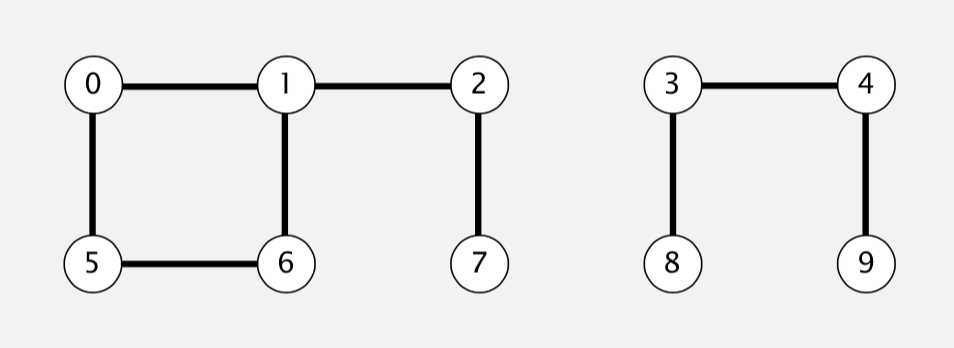
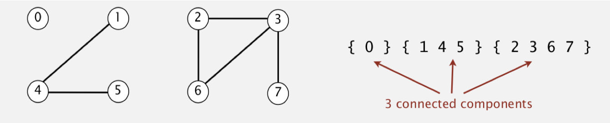
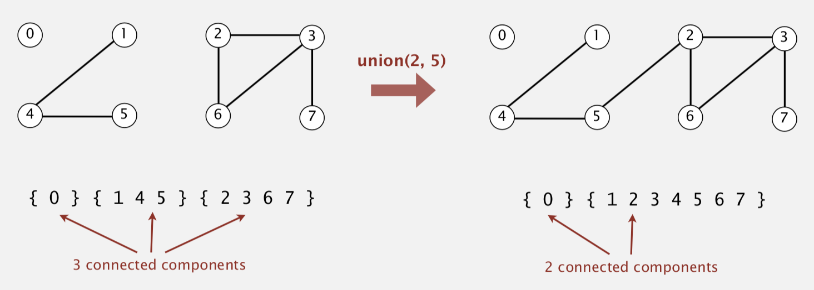
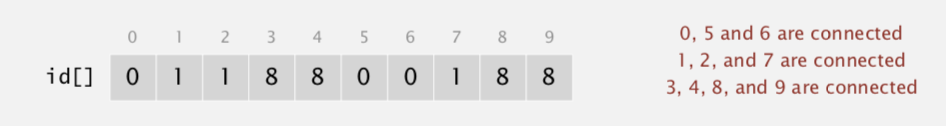
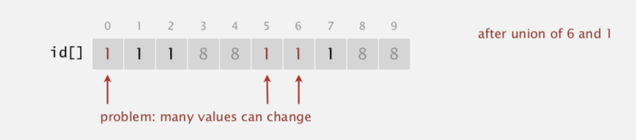
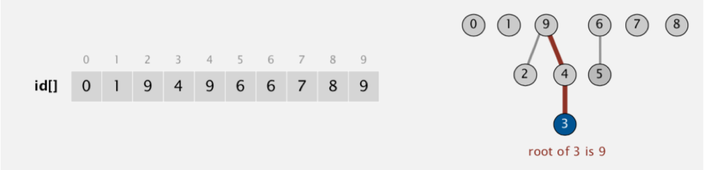

Union-Find
February 7, 2022
Union-Find is an algorithm that is used to solve a number of particular problems. The essentail one is Dynamic connectivity, many other problems are its variants.
Dynamic connectivity #
Given a set of N objects (could be anything), there are two types of operations.
- Union command: connect two objects
- Find/connected query: is there a path connecting the two objects?

Model #
We first model the problems into a mathmatical/algorithmic model.
Objects #
First, we have to symbolize objects. When encountering problems in the real world, sometimes, it is hard to recognize them as “Dynamic connectivity” problems.
So it is important to refer some example of them:
- Pixels in a digital photo.
- Computer in a network.
- Friends in a social network.
When programming, it is convenient to name objects 0 to N-1.
- Use integers as array index.
- Suppress details not relevant to union-find. (could use symbol table)
Connections #
Then, we defined what “is connected to” means precisely. In this case, we assume it an equivalence relation:
- Reflexive: p is connective to p.
- Symmetric: if
- Transitive:
Connected components. Maximal set of objects that are mutually connected.

Operations #
There are only two main operations:
- Find query. Check if two objects are in the same component.
- Union command. Replace components containing two objects with their union.

API #
Union-find data type (API) specify the requirements.
Data structure #
Goal. Design efficient data structure for union-find.
- Number of objects N can be huge.
- Number of operations M can be huge.
- Find queries and union commands may be intermixed.
Interface #
| public class UF | |
|---|---|
| UF(int N) | initialize union-find data structure with N objects (0 to N – 1) |
| void union(int p, int q) | add connection between p and q |
| boolean connected(int p, int q) | are p and q in the same component? |
| int find(int p) | component identifier for p (0 to N – 1) |
| int count() | number of components |
Client #
As we complete the design of the API, we can use them to write a client program. No matter which algorithm we choose to implement the API, the same client is used for test.
Here is an example:
The origin one in the coursera did not test the operation find , the one mentioned below is modified to fix it.
TODO: modified the example below
Code:
public static void main(String[] args)
{
int N = StdIn.readInt();
UF uf = new UF(N);
while (!StdIn.isEmpty())
{
int p = StdIn.readInt();
int q = StdIn.readInt();
if (!uf.connected(p, q))
{
uf.union(p, q);
StdOut.println(p + " " + q);
}
} }
Test data:
% more tinyUF.txt
10
4 3
3 8
6 5
9 4
2 1
8 9
5 0
7 2
6 1
1 0
6 7
Alogrithms #
Quick Find #
Quick-find is an eager approach to the implementation of Union-Find.
What does “Eager” mean?
It process union operation as well as possible in order to make find operation much faster later.
Data structure #
- Integer array id[] of length N.
- Interpretation: p and q are connected iff they have the same id.
For example,

Algorithms #
Here are the algorithms for Find and Union operations based on the data structure mentioned above.
Find. Check if p and q have the same id.
// Example:
id[6] = 0;id[1] = 1
6 and 1 are not connected
Union. To merge components containing p and q, change all entries whose id equals id[p] to id[q].

Implementation in Java #
public class QuickFindUF
{
private int[] id;
public QuickFindUF(int N)
{
id = new int[N];
// set id of each object to itself (N array accesses)
for (int i = 0; i < N; i++)
id[i] = i;
}
// check whether p and q are in the same component (2 array accesses)
public boolean connected(int p, int q)
{ return id[p] == id[q]; }
public void union(int p, int q)
{
int pid = id[p];
int qid = id[q];
// change all entries with id[p] to id[q]
// (at most 2N + 2 array accesses)
for (int i = 0; i < id.length; i++)
if (id[i] == pid) id[i] = qid;
}
}
Complexity #
Cost model. Number of array accesses (for read or write).
| algorithm | initialize | union | find |
|---|---|---|---|
| quick-find | N | N | 1 |
Analysis:
- Union is too expensive. It takes $N^2$ array accesses to process a sequence of N union commands on N objects.
Quick Union #
Quick-Union is a lazy approach to the implementation of Union-Find.
What does “Lazy” mean?
It won’t do too much when performing union command. Instead, more operations are needed in find command.
Data structure #
- Integer array id[] of length N.
- Interpretation: id[i] is parent of i.
- Root of i is id[id[id[…id[i]…]]]. (keep going until it doesn’t change)

Algorithm #
Find. Check if p and q have the same root.
Union. To merge components containing p and q, set the id of p’s root to the id of q’s root.
Implementation in Java #
public class QuickUnionUF
{
private int[] id;
public QuickUnionUF(int N)
{
id = new int[N];
// set id of each object to itself (N array accesses)
for (int i = 0; i < N; i++) id[i] = i;
}
private int root(int i)
{
// chase parent pointers until reach root
// (depth of i array accesses)
while (i != id[i]) i = id[i];
return i;
}
public boolean connected(int p, int q)
{
// check if p and q have same root
// (depth of p and q array accesses)
return root(p) == root(q);
}
public void union(int p, int q)
{
// change root of p to point to root of q
// (depth of p and q array accesses)
int i = root(p);
int j = root(q);
id[i] = j;
}
}
Complexity #
Cost model. Number of array accesses (for read or write).
| algorithm | initialize | union | find |
|---|---|---|---|
| quick-find | N | N | 1 |
| quick-union | N | N† | N |
Quick-find defect.
- Union too expensive (N array accesses).
- Trees are flat, but too expensive to keep them flat.
Quick-union defect.
- Trees can get tall.
- Find too expensive (could be N array accesses).
Improvements #
Weighting #
For Quick-Union, the biggest problem is that trees can grow too tall to find root. If we can find a way to make the tree shorter, we can minimize the complexity of the algorithm.
Based on the intuition mentioned above, we could develop a new version of Quick-Union, which calleed Weighted quick-union.
The baisc idea behind it is pretty simple.
- First, keep track of size of each tree (number of objects).
- Then, balance by linking root of smaller tree to root of larger tree.
Here, larger means that the tree has more nodes (ojbects).
Data structure #
Same as quick-union, but maintain extra array sz[i] to count number of objects in the tree rooted at i.
Algorithm #
Find. Identical to quick-union.
Union. Modify quick-union to:
- Link root of smaller tree to root of larger tree.
- Update the sz[] array.
Implementation in Java #
// find
return root(p) == root(q);
// union
int i = root(p);
int j = root(q);
if (i == j) return;
if (sz[i] < sz[j]) { id[i] = j; sz[j] += sz[i]; }
else { id[j] = i; sz[i] += sz[j]; }
Analysis #
Running time.
- Find: takes time proportional to depth of p and q.
Because you have to find roots of two nodes.
- Union: takes constant time, given roots.
Proposition. Depth of any node x is at most lg N.
Pf. When does depth of x increase? Increases by 1 when tree T1 containing x is merged into another tree T2.
- The size of the tree containing x at least doubles since | T2 | ≥ | T1 |.
- Size of tree containing x can double at most lg N times. Why?
Because there is only N nodes, if there is only one node in the tree initially, after doubling lg N times, there will be 2^(lg N) = N nodes, the same as the total number of nodes.
Comparsion.
| algorithm | initialize | union | connected |
|---|---|---|---|
| quick-find | N | N | 1 |
| quick-union | N | N† | N |
| weighted QU | N | lg N † | lg N |
Path compression #
Just after computing the root of p, set the id of each examined node to point to that root.
No extra data structure is needed.
Implementation in Java #
Two-pass implementation: add second loop to root() to set the id[] of each examined node to the root.
Simpler one-pass variant: Make every other node in path point to its grandparent (thereby halving path length).
In practice, the simpler one-pass variant is able to keep tree almost completely flat. So it is acceptable to use it.
Analysis #
Proposition. [Hopcroft-Ulman, Tarjan] Starting from an empty data structure, any sequence of M union-find ops on N objects makes ≤ c ( N + M lg* N ) array accesses.
- Analysis can be improved to N + M α(M, N).
Linear-time algorithm for M union-find ops on N objects?
-
In theory, WQUPC is not quite linear.
-
In practice, WQUPC is linear.
WQUPC (weighted quick-union path compression)
Actually, there is no linear-time algorithm exists. [Fredman-Saks]
Summary #
M union-find operations on a set of N objects
| algorithm | worst-case time |
|---|---|
| quick-find | MN |
| quick-union | MN |
| weighted QU | N + M log N |
| QU + path compression | N + M log N |
| weighted QU + path compression | N + M lg* N |
Appendix #
Why Quadratic algorithms won’t work? #
For now, computer can perform $10^9$ operations per second, and there are about $10^9$ words in the main memory, which means that computer can touch all words in approximately 1 second.
Suppose we are using a single computer for Union-find, the biggest problem could contain $10^9$ objects and there could be $10^9$ union command on them.
In the worsts cases, every union cost $10^9$ times array accesses and there will be more than $10^{18}$ array access in total.
Under this circumstance, it will cost 30+ years of computer time.
Why the complexity of QU+path compression is N+MlogN? #
Suppose we use one-pass implementation.
For each examined node, we set its id to its grandparent. After one find operation, the height of the tree would reduce by half.